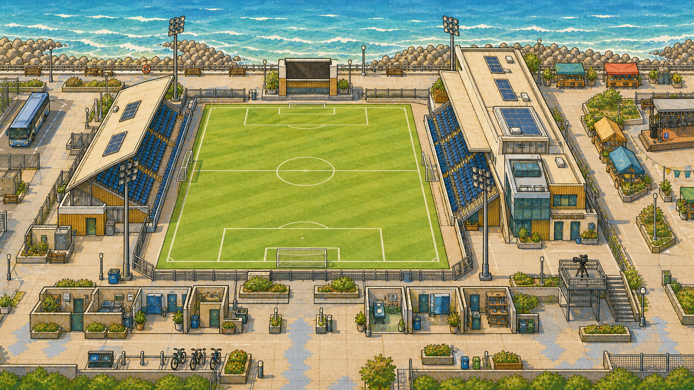

海风球场
澜岸体育
春 12
09:10
海风转晴
旧训练场与场边小店自由的上午
沿海边球场走走，准备下午开店的东西。
现金0
球场48
凝聚46
社区52
委员会1/5
下一位
林川
练完了，想喝一杯青草茶。
收店以后把今天挣到的钱留在场地里
郭教练的三脚训练
第 1 脚
现在 0 分
今天的决定
春 15 日
安若童
今天只做一件事陪小满加练
0 / 3
海风球场
0 : 0
客队
第 18 分钟
对方第一次压上来了
球队的人郭教练关系 0 / 5
回应刚刚的决定
把半块场地画出来
不占本轮经营行动，关系 +1
训练开始以前
旧训练场
小满带来的事
谁先用半块场地
海风联赛手册第一赛季 · 第 1 轮
积分榜
留下球场的四件事
建设进度
这赛季发生过的事
五把椅子，谁有资格坐下？
小满已经做出了自己的选择。现在要决定的是，以后谁能替球场作决定。
教练队员小店社区安若童
WASD走动E互动也可以点击要去的地方
浏览器阻止了本地存档，这次进度在关闭页面前仍可继续，但不会被保存
今天留下了痕迹
接待4 人
场地遮雨棚
余下20 元
认识留到明天
下周，你还会来吗？
三天前，大家以为安若童是来让球场关门的。现在，他们在友谊赛散场后给她留了一把小店钥匙。
郭教练：下周训练还是九点。你要是来，就顺手把门打开。球场撑过了第一周
蓝布落下以后
海风球场
五把椅子保留最终决定权
小满还没有做出决定
没来得及的事还没有留下遗憾
沈峤仍在场外等待
下周危机球场的决定权仍未落定
这场比赛留下了结果
海风 0 : 0 港工
当前第 1 名
东海岸精英邀请赛
球场收到了一封正式邀请
本届对手
鹤岭青训联队
海风队
0 : 2
鹤岭
第 17 分钟
第一脚怎么交出去
这次结果会永久保留
击败精英队
海风 2 : 1 鹤岭从场边小店，走进一座不会轻易倒下的球场
